Lesson 6
Calcolo numerico per la generazione di immagini fotorealistiche
Maurizio Tomasi maurizio.tomasi@unimi.it
Clifford algebras
When shall we organize this seminar?
The Rendering Equation
Review
Radiance (flux \Phi in Watt normalized by the projected area and per unit solid angle): L = \frac{\mathrm{d}^2\Phi}{\mathrm{d}\Omega\,\mathrm{d}A^\perp} = \frac{\mathrm{d}^2\Phi}{\mathrm{d}\Omega\,\mathrm{d}A\,\cos\theta}, \qquad [L] = \mathrm{W}/\mathrm{m}^2/\mathrm{sr}.
Rendering equation: \begin{aligned} L(x \rightarrow \Theta) = &L_e(x \rightarrow \Theta) +\\ &\int_{\Omega_x} f_r(x, \Psi \rightarrow \Theta)\,L(x \leftarrow \Psi)\,\cos(N_x, \Psi)\,\mathrm{d}\omega_\Psi, \end{aligned}
Review
The Bidirectional Reflectance Distribution Function (BRDF) is the ratio between the radiance leaving a surface along \Theta with respect to the irradiance received from a direction \Psi:
f_r(x, \Psi \rightarrow \Theta) = \frac{\mathrm{d}L (x \rightarrow \Theta)}{ L(x \leftarrow \Psi) \cos(N_x, \Psi)\,\mathrm{d}\omega_\Psi }, where \cos(N_x, \Psi) is the angle between the normal of the surface \mathrm{d}A and the incident direction \Psi.
The BRDF describes how a surface “responds” to incident light.
Review

Solving the Equation
In this and the following lessons, we will write code that solves the equation in increasingly complex cases.
Let’s first try to understand how it is possible to solve the equation analytically.
Trivial Examples
Absence of radiation: L_e = 0 and \forall\Psi: L(x \leftarrow \Psi) = 0, and
L = 0.
This is a perfectly dark environment, which is computationally trivial.
If a point emits isotropic radiation with radiance L_e at x_0, then at every other point x in space it holds that
L(x_0 \rightarrow \Theta) = L_e
All space is filled with the same radiance: not very interesting!
Luminous Point and Plane
Consider an infinite, non-emitting (L_e = 0), diffuse plane and a sphere of radius r at a distance d \gg r from the plane with a constant surface radiance L_d.
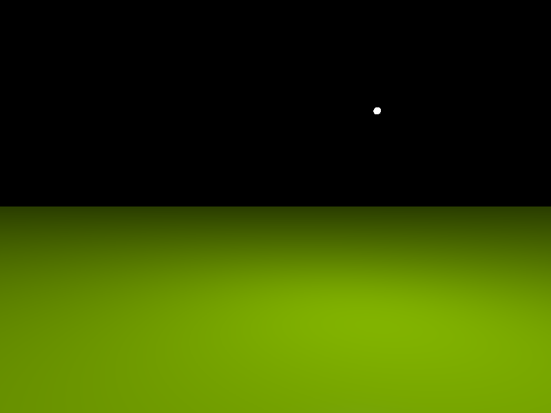
Plane Behavior
The plane is an ideal diffuse surface, therefore
f_r(x, \Psi \rightarrow \Theta) = \frac{\rho_d}\pi,\quad\text{with $0 \leq \rho_d \leq 1$.}
Given a point x on the plane, the rendering equation implies that
L(x \rightarrow \Theta) = \int_{2\pi} \frac{\rho_d}\pi\,L(x \leftarrow \Psi)\,\cos(N_x, \Psi)\,\mathrm{d}\omega_\Psi.
What is the value of L(x \leftarrow \Psi)?
Incoming Radiance
Incoming Radiance
The value of L(x \leftarrow \Psi) is zero, except when \Psi points towards the light source.
We divide the integration domain: \int_{2\pi} = \int_{\Omega(d)} + \int_{2\pi - \Omega(d)}, where \Omega(d) is the solid angle of the sphere at distance d.
The second integral, over 2\pi - \Omega(d), is zero, because within that solid angle L(x \leftarrow \Psi) = 0.
Incoming Radiance
The integral over the solid angle \Omega(d) is simple if we assume that both d (distance between the source and point x) and the angle \theta between N_x and \Psi (the sphere is small) are constant within the domain: L(x \rightarrow \Theta) = \int_{\Omega(d)} \frac{\rho_d}\pi\,L_d\,\cos(N_x, \Psi)\,\mathrm{d}\omega_\Psi \approx \frac{\rho_d}\pi\,L_d\,\cos\theta \times \pi\left(\frac{r}d\right)^2, where \theta is the angle between the normal and the direction of the small sphere.
Properties of the Solution
L(x \rightarrow \Theta) \approx \rho_d\,L_d\,\cos\theta\,\left(\frac{r}d\right)^2.
- Even though the point emits isotropically and the surface is ideally diffuse, the reflected radiance still exhibits a \cos\theta dependence.
- The reflected radiance is proportional to the surface area of the sphere (\propto r^2).
- As d increases, the radiance reflected from the plane decreases as d^{-2} (conservation of energy).
Two Planes
Now suppose we have two ideal diffuse planes, one below and one above:
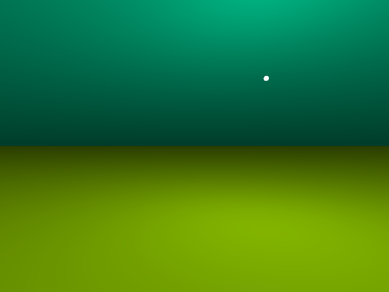
How do we handle this case?
Two Planes
Let’s consider the bottom plane again. The following holds:
L_\text{down}(x \rightarrow \Theta) = \int_{2\pi} \frac{\rho^\text{down}_d}\pi\,L(x \leftarrow \Psi)\,\cos(N_x, \Psi)\,\mathrm{d}\omega_\Psi.
But now the value of the integral is no longer solely due to the contribution of the luminous sphere, because there is also the upper plane.
What is the value of L_\text{up}(x \leftarrow \Psi) produced by the upper plane?
Two Planes
The value of L(x \leftarrow \Psi) for the upper plane is calculated using the same formula as in the previous slide:
L_\text{up}(x \rightarrow \Theta) = \int_{2\pi} \frac{\rho^\text{up}_d}\pi\,L(x \leftarrow \Psi)\,\cos(N_x, \Psi)\,\mathrm{d}\omega_\Psi.
But this leads us into a recursive problem!
The General Problem
In the general case, the integral to be calculated is multiple:
L(x \rightarrow \Theta) = \int_{\Omega^{(1)}_x} \int_{\Omega^{(2)}_x} \int_{\Omega^{(3)}_x} \ldots
It is a multi-dimensional integral (the terms after the first are increasingly less important and tend towards zero, so the dimensions are not infinite).
The General Problem
The rendering equation is impossible to solve analytically in the general case.
Hence the need to use numerical computation!
There are various approaches to solving the rendering equation.
Types of Solutions
There are various ways to solve the rendering equation, and their names are not always used consistently in the literature.
The algorithms fall into two main families:
- Image order
- The solution is calculated for a specific observer.
- Object order
- The solution is independent of the observer.
In this course, we will only cover image order algorithms because they are the easiest to implement.
Image-order Algorithms
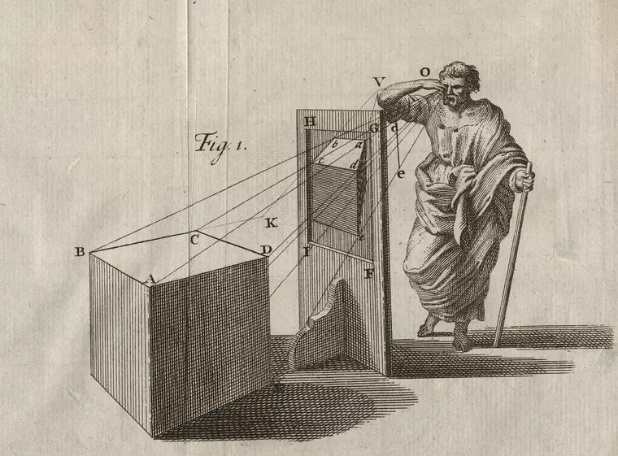
Leon Battista Alberti, De pictura (1435)
General Description
In an image order algorithm, we define the position of an observer of the scene (the man with the stick in Alberti’s drawing) and the direction in which they observe.
The screen is represented by a two-dimensional rectangular surface S.
The rendering solution is calculated only for the points \vec x on the surfaces of objects in the scene that are visible to the observer through the screen S.
Forward Ray-Tracing
In Alberti’s model, the observer’s eye receives the radiation coming from the outside world.
An accurate simulation of light propagation should therefore follow these steps:
- Generate radiation from light sources.
- Trace the path of the radiation using geometrical optics.
- Whenever a photon reaches the observer, its incident direction and SED are recorded.
This approach is called forward ray-tracing: it follows the natural path of light rays.
Backward Ray-Tracing
Backward ray-tracing is used in image oriented methods.
It consists of tracing the path of a light ray backward, starting from the eye of the observer and reaching the light source.
It is computationally more advantageous than forward ray tracing, because most of the light rays emitted from a source do not reach the observer.
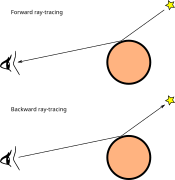
Backward Ray-Tracing
Let’s consider the rendering equation in the context of Alberti’s image.
The backward ray-tracing approach allows us to solve the rendering equation only for the parts of surfaces that are visible through the screen.
Advantages and Disadvantages
Backward ray-tracing algorithms are efficient but not necessarily the best!
Forward ray-tracing (combined with the object order approach) is useful in animations:
- The rendering equation is solved for all surfaces in the scene.
- N frames of the animation are generated without having to recalculate the solution N times.
This is effective when the scene remains static while only the observer moves.
Widely used forward algorithms are radiosity (which however does not use rays) and photon mapping (which is really a hybrid f./b. method)
Screen and Observer
Screen Discretization
Alberti conceived of a screen as a drawing surface; the same idea is found in some Dürer prints (16th century).
In computer graphics, we use the same idea, with the caveat that the screen is represented as a discrete matrix of points.
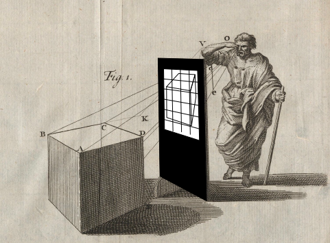
Screen Discretization
Alberti’s observer would see this:
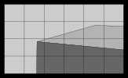
The squares represent the pixels the screen is divided into. (Very large! The standard resolution of a recent monitor is at least 1920×1080).
Projecting Light Rays
Following the backward ray-tracing approach, we project rays through the screen pixels. The algorithm is as follows:
- For each pixel, generate a ray passing through it.
- Each ray will hit a surface in the environment at a point \vec x.
- Compute the solution to the rendering equation at \vec x, which is the radiance emitted towards the observer (i.e., passing through the screen pixel).
- Use the estimated radiance to calculate the RGB color of the pixel.
This is a general approach: we haven’t yet explained how to solve the rendering equation!
Ray through a Pixel
We assume that each ray passes through the center of a pixel:

For a 1920×1080 resolution image, we need to create about 2×10⁶ light rays and solve the rendering equation as many times.
Light Rays
How should a light ray be represented in computer memory?
- Origin O (3D point);
- Direction of propagation \vec d (3D vector);
- Minimum distance t_\text{min};
- Maximum distance t_\text{max};
- Depth n.
Let’s examine each of these properties in detail.
Origin and Direction
You are probably familiar with the canonical equation of a line used in analytic geometry (ax + by + c = 0, or y = mx + q), but these formulas only apply to 2D and do not represent a directed path.
The path of a light ray is better represented by the equation
r(t) = O + t \vec d,
where O is the origin point, \vec d is the direction, and t \in \mathbb{R} is a parameter.
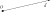
Ray Intersection
The parameter t must obviously satisfy t \geq 0.
Given a light ray intersecting a surface S at point P, we have
P = r(t_P) = O + t_P \vec d
for some value t_P > 0.
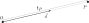
Distance
The value of t_P is conceptually similar to time, but it’s a dimensionless quantity.
It represents the distance between the origin O and the point P, in units of the length of the vector \vec d.
Minimum Distance
From a programming perspective, it’s useful to set limits on the distance t: for example, we are obviously only interested in intersections with t > 0.
In some cases, it also makes sense to impose t > t_\text{pixel}, meaning that the ray has at least passed through the screen (we won’t do this).
Maximum Distance
Similarly, it makes sense to set a maximum distance t_\text{max}.
This limit can be used to ignore objects so distant that their contribution to the scene is negligible.
If we are not interested in setting a maximum limit on the distance of the represented objects, we can set t_\text{max} = +\infty.
(The IEEE standard for representing floating-point numbers defines the values
+Inf,-Inf, andInf, which are very useful for this purpose).
Depth
The last parameter associated with a ray is the depth n, an integer incremented each time a ray is created from a reflection:
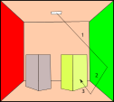
Ray tracers usually set a limit on the maximum depth.
Projections
Ray Generation
Having defined the screen and how to represent a light ray, the challenge remains of how to generate rays that pass through the screen pixels.
There are many ways to produce these rays, each leading to a different representation.
We will focus on two types of projections:
Orthographic projection;
Perspective projection.
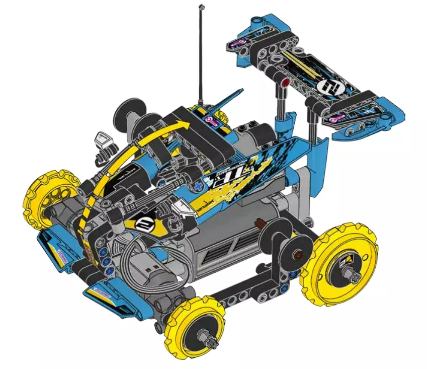
LEGO Instruction Manual (orthogonal projection)
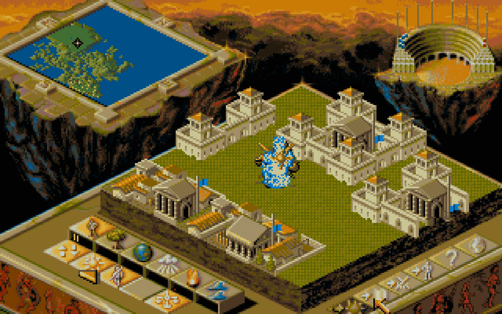
Populous 2 (orthogonal projection)

La città nuova, Antonio Sant’Elia (1914, perspective projection)
Differences
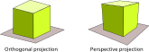
Orthogonal projection preserves parallelism and lengths: congruent and parallel segments in 3D space remain congruent and parallel in the drawing.
Perspective projection makes distant objects smaller: it is more realistic.
Projections

Observer
To implement a projection, it is necessary to define the position of the observer and the direction along which they are looking.
A widely used approach is to use these quantities:
- Observer position P (3D point);
- View direction \vec d (3D vector);
- “Up” vector \vec u (3D vector);
- “Right” vector \vec r (3D vector).
Observer
Aspect Ratio
Aspect Ratio
When defining the observer’s coordinate system, \vec r and \vec u often have different lengths.
This is due to the fact that computer screens are not square.
The ratio between width and height is called aspect ratio; when referring to a screen, it is called display aspect ratio.
CRT Monitors
Old CRT monitors and televisions had an aspect ratio of 4:3 (and also non-square pixels, but fortunately this is no longer the case today…).
Modern monitors have an aspect ratio of 16:9 (more often) or 16:10.
The trend among manufacturers seems to be moving away from 16:9/16:10 and adopt 3:2 (e.g., Microsoft Surface).
Ray-tracing programs should define \vec r so that
\left\|\vec r\right\| = R_\text{display}\,\left\|\vec u\right\|,
where R_\text{display} = N_\text{columns} / N_\text{rows} is the aspect ratio of the screen.